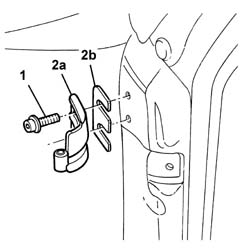

7005A24 FRONT SIDE DOOR R R
- Path
- Procedures > 70 FITTINGS > 7005 PASSENGER COMPARTMENT FRONT SIDE DOORS > 7005A LOCATION OF FRONT DOOR WIND NOISES > 7005A24 FRONT SIDE DOOR R R
- Kind
- repair procedure (removal / refitting; the operation number is the code)
- Applies to
- all engines; all production periods
- Interactive page
- https://sloeber94.github.io/elrnDB-aGt/en/#/125001760
Applies to: all engines; all production periods
 Removing
Removing
 Refitting
Refitting1. Unscrew the hinge retaining bolts.
2. Remove the hinge (2a) and collect any shims (2b).

Applies to: all engines; all production periods
Refitting
RemovingRefit the hinge.
Screw in the bolts without tightening.